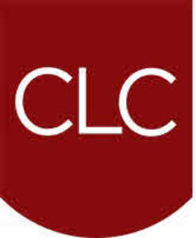

Trade Mark Journal No.2025/033 15 August 2025
UK00004241270 29 July 2025 (41,45)

- Class 41
- Training; organisation of training courses; organisation of training seminars; providing courses of training; arranging and conducting of courses, conferences, seminars and workshops; courses (Training -) relating to law; providing training and educational examination for certification purpose; accreditation of professional competency; publication of printed matter, other than publicity texts, in electronic form; publication of educational materials; publication of educational and training guides; publishing of electronic books and journals online; publication of educational printed matter; publication of newspapers, periodicals, catalogues and brochures; publication of educational teaching materials; provisional of training, education and continuous professional development (CPD) in the field of conveyancing, probate and legal services; arranging and conducting seminars, workshops, webinar, online courses, lectures, conferences and training events for licensed conveyancers and legal professionals; delivering online training and e-learning modules in conveyancing practice and compliance; provision of career development programmes in the field of conveyancing, probate and legal services; preparing and administering certification and examination programmes in the field of conveyancing and property law; publication of training materials, regulatory guidance, educational materials and online resources in the field of conveyancing and property law; online non-downloadable publications and training content in the field of conveyancing, property law and legal services; publication of educational printed matter in the field of conveyancing, property law and legal services; publication of newspapers, periodicals, catalogues and brochures relating to conveyancing, property law and legal services.
- Class 45
- Legal services; legal conveyancing; conveyancing services; legal research relating to real estate transactions; legal consultancy services; licensing authority services; registration services (legal); advisory services in relation to regulatory and licensing matters within the legal professions and licensed conveyancers; advisory and information services relating to legal authorisation, training, and continuing competence in conveyancing practice; legal consultancy and regulatory services relating to the licensing, supervision, and discipline of legal professions and licensed conveyancers; provisional of legal consultancy and regulatory services in the field of property law and conveyancing, namely, providing the compliance with statutory obligations and professional conduct rules, providing regulatory information and analysis relating to real estate transactions, investigating misconduct by conveyancing professionals and enforcing disciplinary outcomes, issuing and managing licences for conveyancing practitioners, maintaining public registers of licensed conveyancers and setting, enforcing professional standards specific to conveyancing and probate work and providing consumer protection and redress services in the context of residential and commercial property transactions.
Council for Licensed Conveyancers
Representative: Fieldfisher LLP